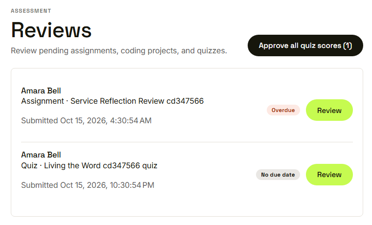
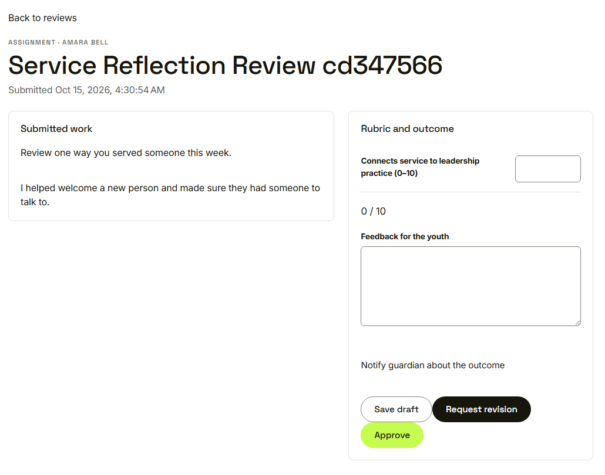
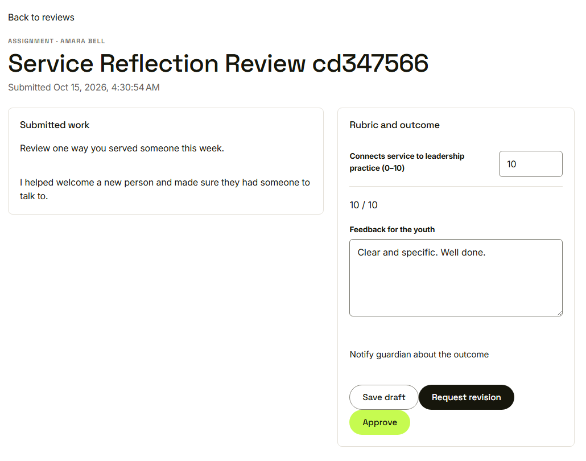
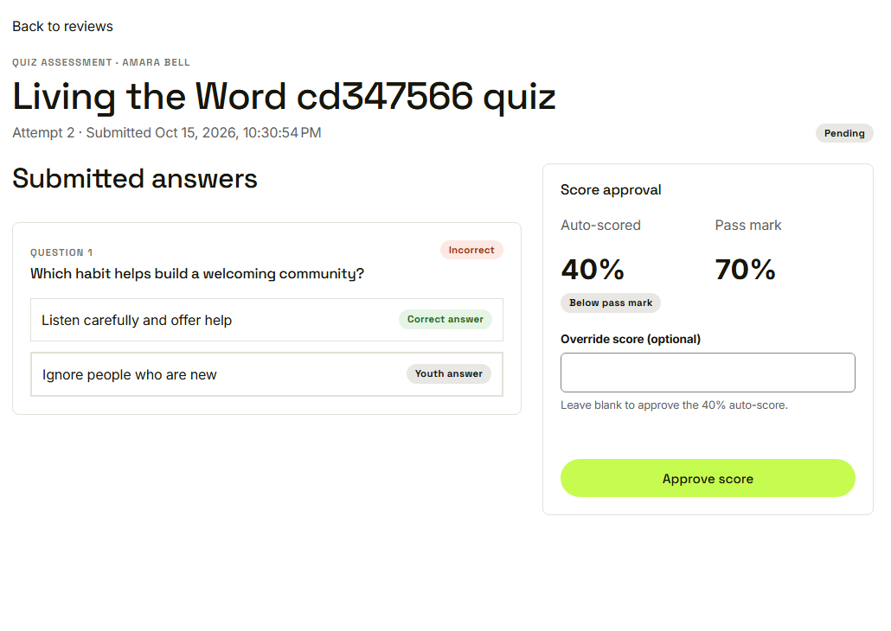
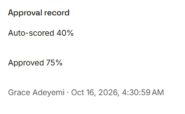
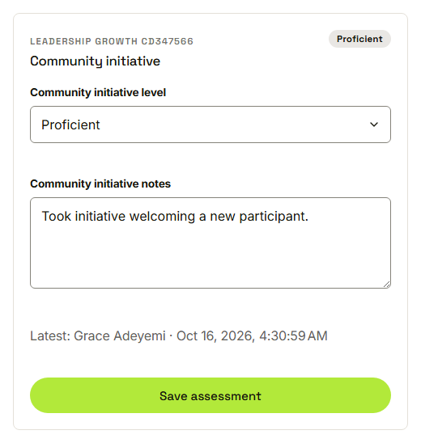

Waypoint · Journey 11
Grade and assess
Assignments, quiz scores and competencies
Everything waiting, in one list

Youth, kind of work, overdue or not
Work on the left, rubric on the right

Score each criterion within its range
Ready to approve

The total is worked out for her
Auto score and pass mark

The auto score does not count yet
Both numbers are kept

Auto score, approved score, mentor, time
A level and a note

Who made the assessment, and when
Things to remember
- Rubric scores stay within their range
- A revision always needs a note
- A quiz score counts only once approved
- Competency levels carry mentor and time